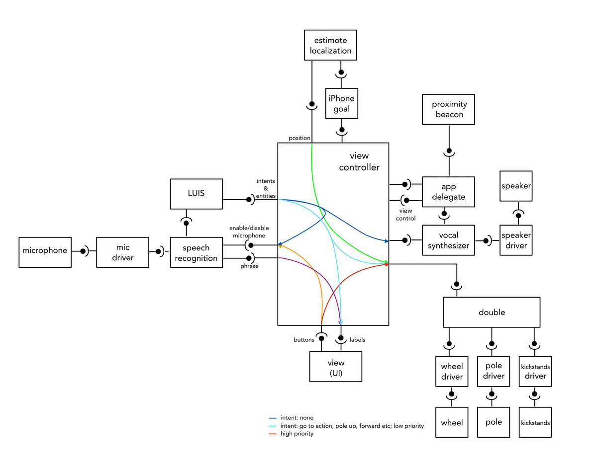
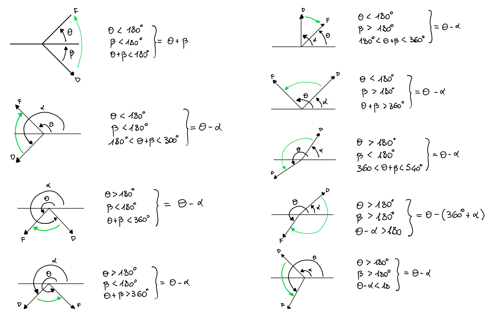

Objective
The objective of this project is to create and IOS App to move the Double Robot using the localization services provided by Estimote Beacons and integrate the motion control with the Speech Recognition services provided by Bing Speech API and the Intent Detection provided by LUIS.ai.
Accomplishments
-
Build a comprhensive user interface with:
-
buttons to:
-
enable/disable speech recognition
-
move the Double
-
enlongate/shorten the Double pole
-
deploy/retract the kickstands
-
labels to show
-
the state of the Speech Recognition(Enabled, Disabled, Listening)
-
speech recognition results:
-
phrases recognized with theris confidence level
-
Intent with the highest score ad its score
-
Type and values of the Entities relative to the Intent
-
Double position (x, y, orientation)
-
Commute vocal commands in something the Double is able to process
-
Move the Double toward a fixed goal position given by a vocal command
-
Double uses the goal position and its initial orientation to rotate toward the goal
-
Double moves toward the goal until the goal is within a certain range or the estimated travel time has elapsed (backup condition)
-
Make a test of the trigonometry calculations used to rotate the double toward the goal.
-
Disable the autonomous mode (stop the Double) whenever a button is pushed (security).
-
Make the Double change its state (deploy/retract kickstands, elongate/shorten the pole) using vocal commands
-
Make the Double recognize if it is in a certain range of a Beacon and act accordingly (Proximity Beacon)
-
Build Estimote locations using the coordinates of corner points and Beacons
Limitations of the systems
Software Architecture
Architecture Scheme

Architecture Description
After launching the app you can either control the Double Robot manually with the buttons on the interface or start the speech recognition by pushing the start rec green button. When the speech recognition is activated the registration are sent to the speech recognition server through webscoket connection and the result phrases are sent to the view controller and to the LUIS service. The LUIS service parses the the phrases and sends the highest scoring recognized intent with relative entities to the view controller. If a intent: none is parsed the view controller should stop the microphone then send an adequate string to the vocal synthetizer. Else if a processable intent is detected it is translated into a command for the double. For security the Double command buttons on the interface have higher priority then the autonomous mode, so whenever a command button is pushed the Double stops whichever action it was doing. In the specific case a goToAction intent with a known entity of type room is detected, the double shold move autonomously toward the room fixed a priory position. In order to do this, the current position of the Double (x, y, orientation), published by Estimote localization each 0.2 seconds, is used to detrmine the movements the robot must perform. The view controller is responsible for what the app does in the foreground, while the app delegate is responsible for the background behaviour. If the double gets close/far to/from a proximity beacon or viceversa, the app delegate sends an adequate string to the vocal synthetizer.
SDK and Tools
-
Xcode: an integrated development enviroment (IDE) for macOS containing a suite of software development tools needed to develop iOS Apps
-
SpeechSDK: Bing Speech API cognitive services for speech recognition
-
Luis (Language Understanding Intelligent Service): extract the meaning of a phrase in a format which can be directly used in the code (JSON)
-
EstimoteProximitySDK: trigger actions when the distance of the device from a proximity beacon gets over/under a certain threshold
-
EstiomoteIndoorSDK: makes position(x, y, orientation) available to the device
-
EstimoteSDK
-
DoubleControlSDK
-
AVFoundation: speech synthetizer API
How to run
-
iOS must be at least 11.0
-
check if the subscription key of the Bing Speech API is still valid, if this is not the case get a new one
-
USE THE WORKSPACE FILE (NOT THE PROJECT FILE) WHEN OPENING XCODE
-
set IPHONE to 1 if you are using an iphone or set it to 0 if you are using an ipad
-
if you want to build a new rectangular map
-
set MAP_FROM_CLOUD to 0
-
insert the coordinates of the corner points and of the loaction beacons in the section of the code relative to the location builder
-
run the code
-
substitue the location identifier with the one provided in the log
-
set MAP_FROM_CLOUD to 1 and set the location identifier of the desired location
-
download the App to your device
-
follow the instructions shown in the user interface
Remember from the limitation section that the coninuous behaviour of the speech recognition is not working from the moment ipad iOS was updated from version 8.3 to version 11.0
Future Devevelopments
-
find a way to re-enable the continous speech recognition behaviour, possible solutions are:
-
Use a silence detector within the app to determine when to connect to the server to perform the speech recognition
-
Use the endMicandRecognition method before restarting the speech recognition (startMicAndRecognition method) after a final response is recieved. This could lead to a clean closure of the service before it restarts.
-
Reinitialize the speech recognition client each time a final response is recieved
-
create a function to stop the micrphone before the double speaks and reactivate it afterwards in order to prevent it from looping on its own speech.
-
update the firmware of the Double to the version 10.0 to be able to get informations from the encoders and integrate them with the bluetooth positioning system.
-
create a websocket connection between devices to share positions and develop a method to follow moving goals
Appendix
Trigonometry

User Interface
Bibliography
SpeechRecognitionSDK
LUIS
DoubleRobot
AVFoundation
EstimoteIndoorLocationSDK
DoubleControlSDK
cocoapods
EstimoteProximity

 1.8.11
1.8.11